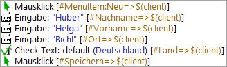
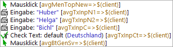
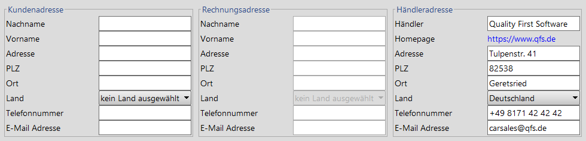

| Version 6.0.3 |
Die Wiedererkennungskriterien können auf zwei unterschiedliche Arten mit den Events in den Tests verknüpft werden. Bei der klassischen Methode werden die Wiedererkennungsmerkmale als Attribute eines 'Komponente' Knotens abgespeichert (siehe auch 'Komponente' Knoten). In den Tests wird darauf über die 'QF-Test ID der Komponente' referenziert. Alternativ können GUI-Elemente mittels SmartID (Preview) direkt über die Wiedererkennungskriterien adressiert werden. 'Komponente' Knoten werden dann keine aufgezeichnet.
SmartIDs und die klassische Methode mit aufgenommenen 'Komponente' Knoten können alternativ verwendet, im Bedarfsfall aber auch kombiniert, werden. Die folgenden Punkte können Ihnen bei der Überlegung, ob Sie SmartIDs verwenden oder die Komponenten aufnehmen wollen, helfen:
SmartIDs bieten in der folgenden Situation Vorteile gegenüber den aufgenommenen 'Komponente' Knoten:
Die angesprochenen GUI Komponenten sollen bei Event und Check-Knoten direkt erkennbar sein. Falls die Komponentenbezeichner der Komponenten kryptisch, aber brauchbare Beschriftungen vorhanden sind, haben SmartIDs Vorteile:
|
|  | ||
|
| Abbildung 5.2: Lesbarkeit von SmartIDs | ||
|
|  | ||
|
| Abbildung 5.3: Lesbarkeit von Bezeichnern | ||
Auch bei Prozeduren kann die Lesbarkeit eines Tests verbessert werden, wenn statt kryptischer Bezeichner auf Beschriftung basierende SmartIDs verwendet werden können.
SmartIDs können auch bei Feldern, die die gleichen Wiedererkennungsmerkmale haben,
aber in unterschiedlich beschrifteten Panels liegen, die Lesbarkeit erhöhen.
Für nachfolgendes Beispiel könnte man zum Beispiel die SmartIDs
#Kundenadresse@#Nachname und #Rechnungsadresse@#Nachname
verwenden.
|
|  | ||
|
| Abbildung 5.4: Lesbarkeit von SmartIDs in Panels mit Beschriftung | ||
Bei testgesteuerter Entwicklung bieten SmartIDs den großen Vorteil,
dass keine 'Komponente' Knoten angelegt werden müssen. Außerdem werden
bei testgesteuerter Entwicklung häufig die Komponentenbezeichner
im technischen Design festgelegt, die dann für die Testerstellung
genutzt werden können. Wenn der Komponentenbezeichner zum Beispiel btnOK
lautet, kann die Komponente über die SmartID #btnOK referenziert
werden.
Schlüsselwort-basierende Tests werden technisch über Prozeduraufrufe und Parameter implementiert. Der Testersteller nimmt somit keine Komponenten auf und ist für die Identifikation der Komponenten auf visuelle Informationen aus dem GUI angewiesen. Dies kann die Beschriftung der Komponente oder deren Funktion (Klasse) sein. In der SmartID können die Erkennungsmöglichkeiten auch kombiniert und mit einem Index versehen werden.
Die Stabilität der Wiedererkennung ist bei aufgenommenen Komponenten und SmartIDs gleich gut, wenn für die SmartID der Name, gegebenenfalls in Verbindung mit der Klasse, verwendet wird. Grundsätzlich hängt die Wiedererkennungsstabilität von der Änderungswahrscheinlichkeit der verwendeten Kriterien ab. Wenn zum Beispiel die Beschriftung einer Komponente in einer Applikation über die Versionen hinweg stabil bleibt, wird auch die Wiedererkennung über eine SmartID mittels Beschriftung (Merkmal bzw. qfs:label) stabil sein.
Aufgenommene 'Komponente' Knoten verwenden für die Wiedererkennung einen vorgegebenen Algorithmus, der den einzelnen Wiedererkennungskriterien unterschiedliche Wichtigkeit beimisst. Klasse, Name und Hierarchie haben hierbei Top-Priorität. Wenn kein Name vorhanden ist, wird aus Hierarchie, Beschriftung, Index und Geometrie (in absteigender Wichtigkeit) eine Wahrscheinlichkeit berechnet, an Hand derer entschieden wird, ob es sich bei einem GUI-Element um die gesuchte Komponente handelt.
Dieser Algorithmus hat sich für die meisten Anwendungsfälle als sehr gut
erwiesen. Es gibt jedoch auch Fälle, in denen untergeordnete
Wiedererkennungskriterien (z.B. die Beschriftung)
eine bessere Stabilität bieten als die höher gewichteten Kriterien.
Bei aufgenommenen 'Komponente' Knoten kann man in diesem Fall mittels
Resolver eingreifen, siehe Das resolvers Modul. Hier kommt jedoch die Stärke der
SmartIDs zum tragen, dass gezielt ein stabiles Wiedererkennungskriterium (oder eine
Kombination mehrerer Kriterien) angegeben werden kann.
Dies ist zum Beispiel der Fall, wenn die Beschriftung stabiler ist als der Komponentenbezeichner.
SmartIDs haben auch Vorteile, wenn die Wahrscheinlichkeit groß ist, dass sich bei Versionswechseln (manchmal sogar bei jedem Programmstart) die Komponentenhierarchie verändert oder sich die Erkennungsmerkmale übergeordneter Komponenten ändern. SmartIDs berücksichtigen die Komponentenhierarchie standardmäßig nicht.
Hinsichtlich Wartbarkeit haben die aufgenommenen 'Komponente' Knoten die Nase vorn, da die Wiedererkennungskriterien zentral im 'Komponente' Knoten abgespeichert werden und Änderungen nur an dieser Stelle nachgepflegt werden müssen.
Bei SmartIDs hingegen sind die Wiedererkennungskriterien dezentral hinterlegt. Änderungen können aber auch hier über die mächtige Suchen-Ersetzen-Funktion gut nachgepflegt werden. Bei SmartIDs mit gleichen Wiedererkennungskriterien für unterschiedliche Komponenten muss gegebenenfalls manuell eingegriffen werden.
Wenn für SmartIDs die Komponentenbezeichner genutzt werden, können sie performanzmäßig mit aufgenommenen 'Komponente' Knoten mithalten, da für die erkannten 'Namen' ein Index verwendet wird.
Wenn die SmartID jedoch die Beschriftung (Merkmal bzw. qfs:label) oder andere Weitere Merkmale nutzt, reicht die Performanz nicht an die von aufgenommenen 'Komponente' Knoten heran. Sie kann durch explizite Angabe der Klasse deutlich verbessert werden, da dann die GUI-Elemente bereits danach gefiltert werden, bevor die Merkmale ermittelt werden.
Aufgenommene 'Komponente' Knoten können mit SmartIDs kombiniert werden. Details hierzu finden Sie in Unterelemente: Adressierung relativ zur übergeordneten Komponente und 'QF-Test ID' der Komponente als SmartID.
Aufgenommene Komponenten können genutzt werden, um die SmartID-Syntax zu überlagern, in dem man ihre 'QF-Test ID' auf eine SmartID inklusive Präfix "#" setzt. Dies ermöglicht einfache, datengetriebene oder im Vorfeld generierte Tests mit SmartID zu erstellen und nur an neuralgischen Punkten einzelne Komponenten spezifischer zu definieren, ohne die Tests oder Prozeduren dafür anpassen zu müssen.
| Letzte Änderung: 6.9.2022 Copyright © 1999-2022 Quality First Software GmbH |